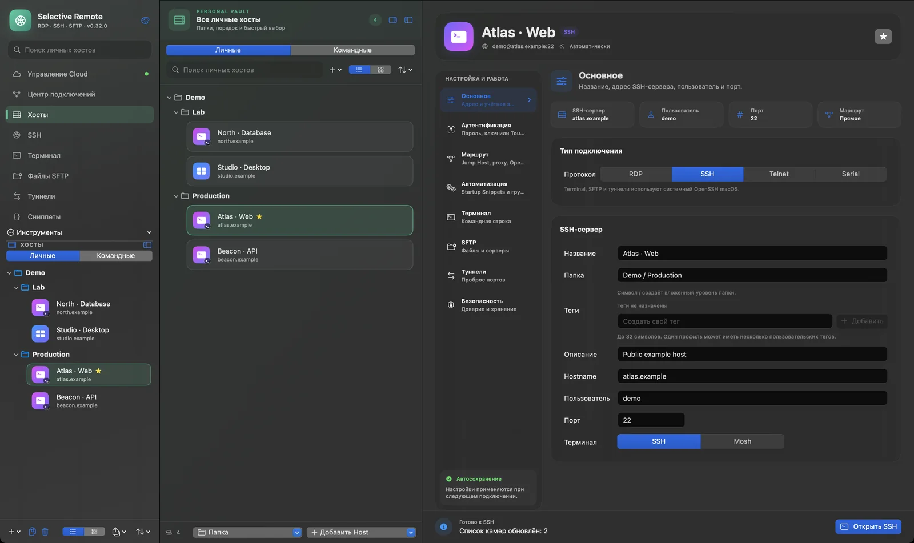
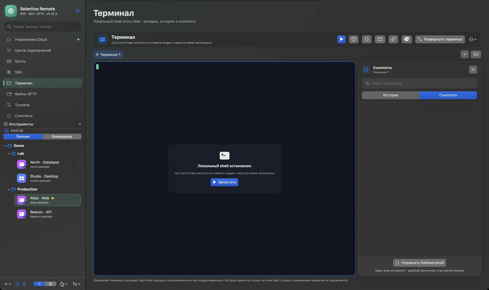
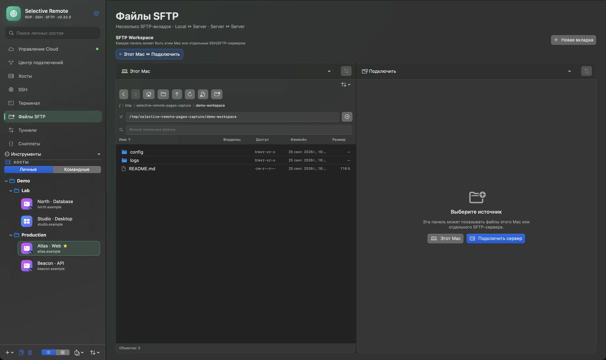
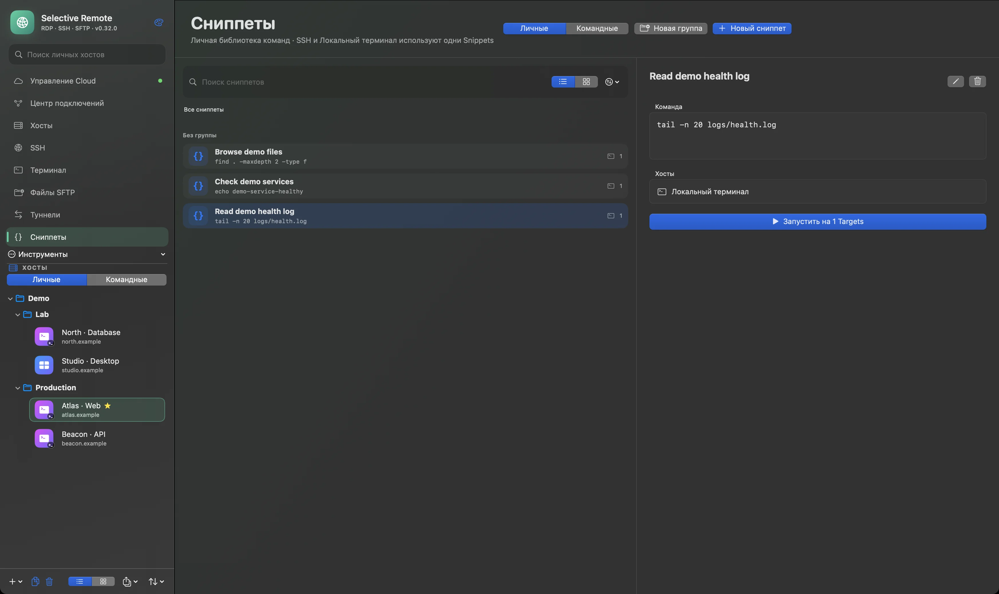

Подключайтесь
RDP и SSH-подключения всегда под рукой.
ПРИЛОЖЕНИЕ ДЛЯ MAC · ОТКРЫТЫЙ КОД
Доступна для скачивания · v0.31.0SSH, SFTP, RDP и туннели в нативном приложении для Mac. Подключайтесь, находите нужное и работайте без потери контекста.
На снимках — интерфейс ещё не выпущенной 0.32. Сейчас для Mac доступна v0.31.0.

Скоро в 0.32 · Реальный снимок приложения · демоданные · предварительный вид v0.32.0 (163)
01 / 03
От сохранённого подключения до нужного сеанса — без лишних переходов.
RDP и SSH-подключения всегда под рукой.
Собирайте хосты в группы и быстро находите нужный.
Открывайте терминал, файлы или удалённый рабочий стол.
ПРИЛОЖЕНИЕ MAC
В 0.32 личные и командные хосты встретятся в одном нативном интерфейсе. Доступная сегодня v0.31.0 уже поддерживает локальную работу с SSH, SFTP, RDP и туннелями.
Реальный снимок приложения · демоданные · предварительный вид v0.32.0 (163)
SELECTIVE REMOTE / ИНСТРУМЕНТЫ
Настоящие экраны приложения: терминал и файловое пространство рядом с подключениями.
Вкладки, панели и сниппеты рядом с хостом. На демоснимке локальный shell намеренно остановлен.

Реальный снимок приложения · демоданные · предварительный вид v0.32.0 (163)
Две панели для передачи Mac ↔ Server и Server ↔ Server. На демоснимке показаны локальные файлы без подключения к серверу.

Реальный снимок приложения · демоданные · предварительный вид v0.32.0 (163)
Сохраняйте команды в библиотеке сниппетов и выбирайте, где их использовать: в SSH-сеансе или локальном терминале.
Реальный снимок приложения · демоданные · предварительный вид v0.32.0 (163)

MAC ↔ CLOUD
В 0.32 Personal Vault добавит клиентское шифрование и синхронизацию Hosts, Credentials и Snippets между доверенными Mac и браузерными устройствами. Локальная работа останется доступной без аккаунта.
Открыть Cloud ↗Схема будущей синхронизации, а не снимок интерфейса приложения.
В 0.32 Team Vaults объединят общие Hosts, Credentials и Snippets с ролями, приглашениями и доверенными устройствами.
ЛИЧНОЕ / КОМАНДНОЕ
Personal Vault остаётся личным. Team Vault отделяет общие данные и управляет доступом по ролям и устройствам.
ОТКРЫТЫЙ КОД / БЕЗОПАСНОСТЬ
Исходный код Selective Remote открыт. Доступное приложение для Mac использует Связку ключей macOS и проверку SSH-хоста. Vaults с клиентским шифрованием относятся к будущей 0.32.
Смотреть исходный код ↗РУКОВОДСТВА
Практические материалы о возможностях, которые уже доступны на Mac.
О ПРОЕКТЕ / ПОДДЕРЖКА
Приложение бесплатное. Добровольная поддержка помогает продолжать разработку. За новостями и ответами можно обратиться в публичные каналы проекта.